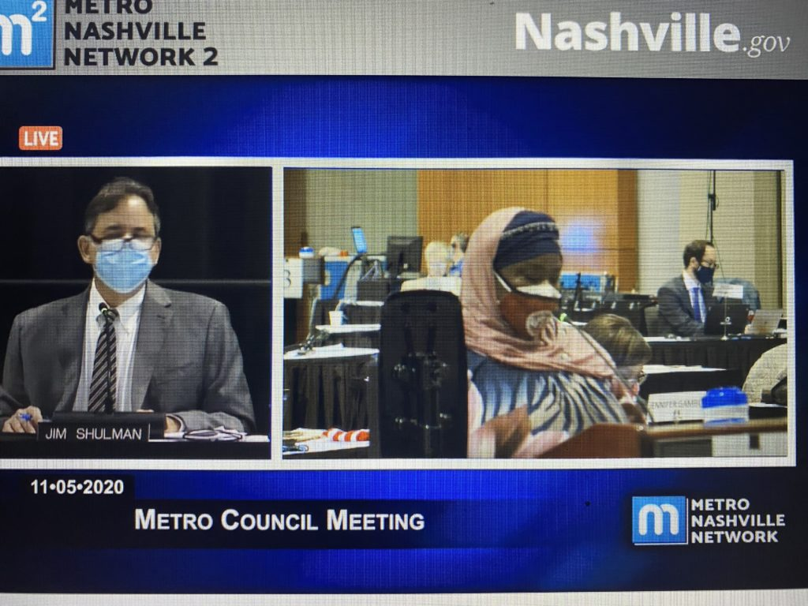

Rep. John Lewis Way
It’s official! The metro council voted last Thursday, November 5th, 2020, to rename Fifth Avenue from Jefferson Street (North side), through Broadway/Downton and all the way to Nashville City Cemetery (South side) as Rep. John Lewis Way.
Congressman John Lewis began his lifelong crusade for civil rights and civic justice in Nashville while a student at the American Baptist Theological Seminary and later at Fisk University. He was a leader in the historic lunch counter sit-ins that lead to Nashville becoming the first Southern city to start the desegregation of public places. While a student, Lewis was invited to attend nonviolence workshops held at Clark Memorial United Methodist Church by the Rev. James Lawson and Rev. Kelly Miller Smith. There, Lewis and other students became dedicated adherents to the discipline and philosophy of nonviolence, which he practiced for the rest of his life. In 1961, Lewis represented the Nashville group of the burgeoning civil rights movement, as one of the 13 original “Freedom Riders.” He was also instrumental in organizing bus boycotts and other nonviolent protests to support voting rights and racial equality.
As the sponsor of this historic bill, I am grateful to the members of the Minority Caucus, the LGBTQ caucus, the district councilmembers- CM O’Connell and CM Sledge, VM Shulman, the bill co-sponsors and as well as several mero offices and staff.
I believe this renaming would not have been possible without the John Lewis Way committee members. These community leaders agreed to serve on the committee and work tirelessly to help garner support for the project. I am humbled and honored to work with – Greg Bailey, Susan Huggins, Sam Reed, Senator Brenda Gilmore, Hon Vivian Wilhoite, Marie Sueing, Rita McDonald, Tim Walker, Tom Turner and deputy mayor Brenda Haywood!
Finally, the renaming was a complete community effort with letters of support for the American Baptist College, Fisk University, RYMAN, Country Music Hall of Fame and Giarratana, LLC. We are grateful to several members of the community attending the 3 community meetings and for speaking and writing in favor.
You can watch the passing of the bill at this link

Below are some of the questions asked by residents during the community meeting
Why 5th Avenue?
Fifth Avenue, North to the South and the cross streets that it will bridge over, represents everything that the Honorable John Lewis fought and almost lost his life to change. From desegregating neighborhoods, to access to businesses, to the right to sit anywhere on a bus as one passes the Greyhound Bus Station, to the right to sit at the lunch counters of Woolworths. Peacefully, with love and tirelessly with great strength and endurance, John Lewis worked to change the social landscape of not just Nashville, Tennessee but the world.
5th Avenue also crosses Jefferson (where Fisk University is located), the Nashville City Cemetery (where two of the original Freedom Riders were buried) and the Ryman Auditorium (where congressman received an award from Dr. Martin Luther King.
What will be the new official street name?
Rep. John Lewis Way North and Rep. John Lewis Way South.
When will the name change take effect?
The name change will be effective January 1, 2021. An amendment was filed to change the effective date in response to the feedback received. Having a January 1 effective date ensures that a change of address will not negatively impact any election. The change will also make it easier for businesses to be able to change their address with the secretary of state when they filed their annual report. Businesses will also be able to change their address on their tax return without the need for a change of address form.
How do I change my street name/address?
With the United States Postal Service (USPS), it is not necessary for you to change your address. The USPS will handle updating the street name change once Metro notifies them that the street name has been officially changed.
How long can I use my old street name/address?
According to the USPS, they will recognize the former street name/address for up to a year from the time that the new street name change becomes effective. This means residents and businesses have until December 31, 2021 to use up old stationeries, envelopes etc. with the old addresses. Even after a year however, the USPS states that the former street name/address will remain in the system as a “no stats’ meaning that it’s the former street name
Do I need to do anything else to get my mail?
Yes. According to the USPS and Metro Public Works, you should still notify certain mailers directly of the new street name/address change. Companies that have established a business relationship, like financial, insurance and health companies, for example, will not change your street name/address unless you contact them directly. Further Metro Public Works advises that you should contact your telephone company and your security alarm company. Also, contact friends and family members to inform them of your new street name/address change.
Will the city provide a streamlined process for making the necessary document changes?
Yes, residents do not have to change their addresses with the post office, this will be automatically done. Same goes for NES. NES has indicated that the addresses will be changed automatically
Beyond our driver’s license, what other official documents will need to be updated as a result of the name change? Will I need to change my deed?
There is no need to change your title, deed or passports. The only document is your license. You can change your license online without a fee, however if you wish to have a physical card with the address change, you must pay a $15 fee.
What is the cost of the sign replacement, considering Metro Finances?
According to Metro Public Works, the estimated cost of replacing the signs is $19,323
Nashville gave congressman Lewis his start and the training that made him a civil rights legend. The renaming will not only honor congressman Lewis, but will also recognize Nashville’s role in the civil rights movement. More than anything, the committee hopes the visibility of the street name to residents and visitors will remind folks that we must and should continue to push for a better society for all of us.
Stay tuned for more information from the committee on the unveiling and what we hope will be a city-wide celebration